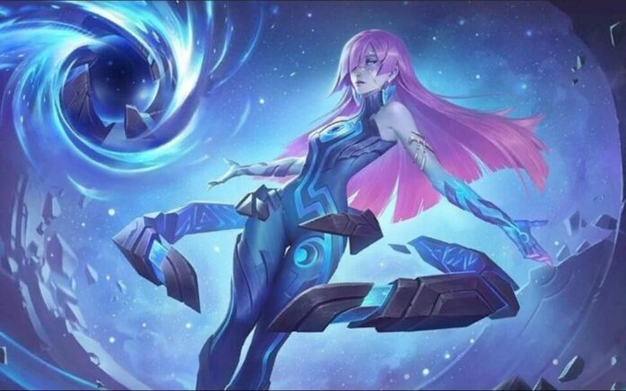

Llegó Novaria, la nueva maga de Mobile Legends
Luego de tanta espera, Moonton agregó una nueva heroína al mundo de Mobile Legends: se trata de Novaria, una maga de 20 años que nació en Eruditio y que, a los 16 años, sufrió la perdida de su madre y su mundo a causa de una alteración en el Atlas Estelar, un objeto con el que intentó trazar estrellas para reclamar su destino y que, al manipularlo, provocó un bucle temporal, el cual la hace repetir, una y otra vez el mismo momento en el que lo pierde todo. Años más tarde, dentro del mundo de las estrellas (sitio donde Novaria pasó 4 años de su vida buscando una forma de recuperar su hogar, se encuentra con su forma astral que le dice: "Nuestro destino estaba escrito en las estrellas, más allá de nuestro alcance, pero algo siempre encuentra la manera de brillar en la oscuridad", refiriendose a que, pese a no poder cambiar lo que ya está destinado, aun puede encontrar luz en el presente
En cuanto a sus habilidades en el juego, Novaria tiene la habilidad de tener una mayor visión del campo gracias a su segunda skill, que le permite traspasar el campo de batalla y ver todo el mapa, como así también ponerse en forma astral y lanzar una "Esfera Astral", el cual inflige 150 puntos de Daño Mágico a los enemigos que atraviesa la esfera. Al mismo tiempo, Novaria gana velocidad de movimiento y atravesar los terrenos del campo.
Su primera habilidad "Meteorito Astral",le permite invocar un meteoro para que se estrelle en la ubicación objetivo e infligiendo 100 (+25% de poder mágico total) de daño mágico y ralentiza a los enemigos golpeados en un 20%. Luego, los fragmentos del meteorito continúan golpeando el área con un 50 de daño y reduciendo la velocidad de movimiento de los enemigos en un 10%, acumulable hasta un 60%. Su ulti (tercera habilidad), además de ralentizar a los enemigos que reciban dicha ulti, podrá revelar la posición de aquellos rivales que estén escondidos entre los arbustos.
En cuanto a su build, recomendamos utilizar las botas de demonio, que le darán un 4% de regeneración de maná, ya que Novaria gasta mucho maná con cada una de sus habilidades; luego podrás usar la varita de genio o el reloj de destino, que también le proporcionará maná. La cachiporra relámpago, Cristal de Poder y Alas Sangrientas completan la build perfecta para Novaria. Y vos, ya la probaste en el campo de batalla?
Para conocer más sobre la nueva heroína, te dejamos a continuación un video donde se explica más a fondo su jugabilidad